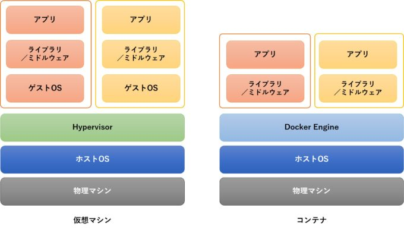

Docker
Dockerとは？
コンテナ型の仮想環境を作成、配布、実行するためのプラットフォーム．要するに仮想環境の一種（厳密には違う）．

従来の仮想環境との差異
- コード化されたファイルを共有することで、どこでも誰でも同じ環境が作れる
- 作成した環境を配布しやすい
- 環境をファイルにして保存できる
- スクラップ＆ビルドが容易にできる
- コマンド一つで作れたり消したり

イメージとコンテナ
- イメージ：アプリケーションの実行環境の雛形
- コンテナ：アプリケーションの実行環境(実体)
- イメージをベースにしてコンテナを作成
Dockerの導入
-
公式からインストーラを落とす方法
- https://docs.docker.com/docker-for-mac/install/ から
-
homebrewを使う方法（macOS）
$ brew install docker $ brew cask install docker
チュートリアル
イメージのダウンロード
docker pull 取得するイメージ名:タグで，Docker Hub(後述)からイメージを引っ張ってくる．
例：Ubuntuの最新バージョンのイメージをダウンロード．
$ docker pull ubuntu:latest
保存してあるイメージの一覧表示
$ docker image ls
REPOSITORY TAG IMAGE ID CREATED SIZE
ubuntu latest 47b19964fb50 1 months ago 88.1MB
コンテナの起動
基本的に，docker run イメージ名で，イメージをベースにしてコンテナを作成(起動)
$ docker run ubuntu
これだとコンテナが起動してすぐ停止する．
→オブションをつける
$ docker run -it ubuntu
- オプション
-i：ホスト側からコンテナ側への入力を認める-t：コンテナ側からホスト側への入力を認める
起動しているコンテナの一覧表示
$ docker ps -a
CONTAINER ID IMAGE COMMAND CREATED STATUS PORTS NAMES
446e676e86b1 ubuntu:latest "ls" 11 months ago Exited (0) 11 months ago condescending_archimedes
f2f13fd09819 ubuntu:latest "/bin/bash" 11 months ago Exited (255) 11 months ago vibrant_liskov
オプション
-a：停止してるコンテナも表示
コンテナの停止・再開
コンテナ側で，「Ctrl + P + Q」でコンテナからログアウト(停止, detach)する．
ホスト側で，docker attach コンテナIDで，コンテナへログイン(再開, attach)する．
$ docker attach 94b9e29221aa
あるいは，
$ docker exec -it 94b9e29221aa /bin/bash
nvidia-docker
DockerでNVIDIA社製のGPUを使いたいときに用いる
-
Macbookに搭載されているGPUはNVIDIA社製ではない．
-
NVIDIA-GPUが搭載されたLinuxマシンで使う．
- GPUは機械学習で使うモデルの学習に使う．
- AWS EC2, GCP VM, MS AzureなどのクラウドマシンではNVIDIA-GPUを提供
Docker Hub
- 様々なイメージがあるサイト
- 取得したいイメージを検索
- 自分で作ったイメージをアップロードも可能
docker pull 取得したいイメージのリポジトリ名で，イメージをダウンロード可能．
Dockderfile
- イメージを作成するための設定ファイル
- 用いるイメージや実行するコマンドなどを記述
コマンドでDockerfileからイメージを作成
docker build <Dockerfileのパス> -t <コンテナ名>で，イメージを作成可能．
$ docker build ./ -t example_container
!!! docker build